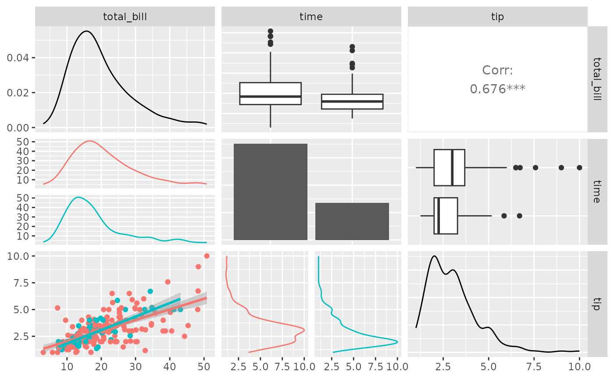
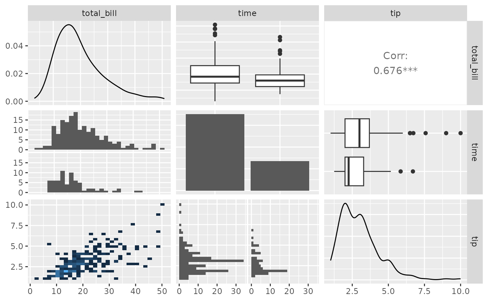
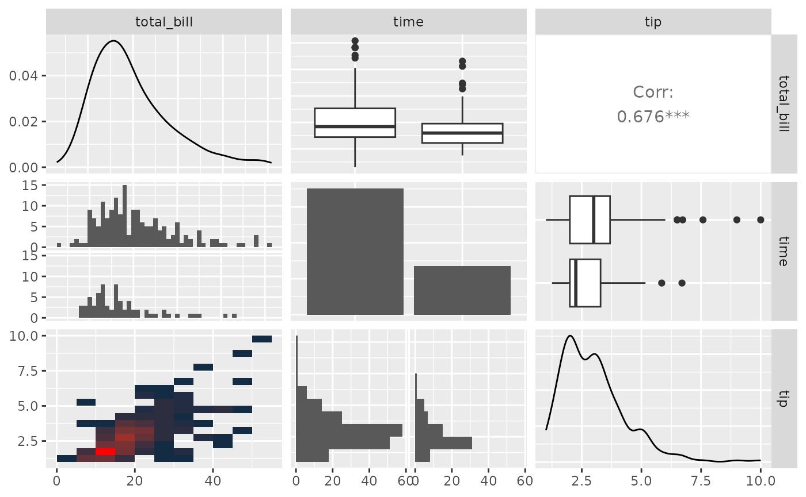

ggpairs(): Pairwise plot matrix
Barret Schloerke
Oct 29, 2015
Source:vignettes/ggpairs.Rmd
ggpairs.Rmdlibrary(GGally) #> Loading required package: ggplot2 #> Registered S3 method overwritten by 'GGally': #> method from #> +.gg ggplot2
GGally::ggpairs()
ggpairs() is a special form of a ggmatrix() that produces a pairwise comparison of multivariate data. By default, ggpairs() provides two different comparisons of each pair of columns and displays either the density or count of the respective variable along the diagonal. With different parameter settings, the diagonal can be replaced with the axis values and variable labels.
There are many hidden features within ggpairs(). Please take a look at the examples below to get the most out of ggpairs().
Columns and Mapping
The columns displayed default to all columns of the provided data. To subset to only a few columns, use the columns parameter.
data(tips, package = "reshape") pm <- ggpairs(tips) pm #> `stat_bin()` using `bins = 30`. Pick better value with `binwidth`. #> `stat_bin()` using `bins = 30`. Pick better value with `binwidth`. #> `stat_bin()` using `bins = 30`. Pick better value with `binwidth`. #> `stat_bin()` using `bins = 30`. Pick better value with `binwidth`. #> `stat_bin()` using `bins = 30`. Pick better value with `binwidth`. #> `stat_bin()` using `bins = 30`. Pick better value with `binwidth`. #> `stat_bin()` using `bins = 30`. Pick better value with `binwidth`. #> `stat_bin()` using `bins = 30`. Pick better value with `binwidth`. #> `stat_bin()` using `bins = 30`. Pick better value with `binwidth`. #> `stat_bin()` using `bins = 30`. Pick better value with `binwidth`. #> `stat_bin()` using `bins = 30`. Pick better value with `binwidth`. #> `stat_bin()` using `bins = 30`. Pick better value with `binwidth`.
## too many plots for this example. ## reduce the columns being displayed ## these two lines of code produce the same plot matrix pm <- ggpairs(tips, columns = c(1, 6, 2)) pm <- ggpairs(tips, columns = c("total_bill", "time", "tip"), columnLabels = c("Total Bill", "Time of Day", "Tip")) pm #> `stat_bin()` using `bins = 30`. Pick better value with `binwidth`. #> `stat_bin()` using `bins = 30`. Pick better value with `binwidth`.
Aesthetics can be applied to every subplot with the mapping parameter.
library(ggplot2) pm <- ggpairs(tips, mapping = aes(color = sex), columns = c("total_bill", "time", "tip")) pm #> `stat_bin()` using `bins = 30`. Pick better value with `binwidth`. #> `stat_bin()` using `bins = 30`. Pick better value with `binwidth`.
Since the plots are default plots (or are helper functions from GGally), the aesthetic color is altered to be appropriate. Looking at the example above, ‘tip’ vs ‘total_bill’ (pm[3,1]) needs the color aesthetic, while ‘time’ vs ‘total_bill’ needs the fill aesthetic. If custom functions are supplied, no aesthetic alterations will be done.
Matrix Sections
There are three major sections of the pairwise matrix: lower, upper, and diag. The lower and upper may contain three plot types: continuous, combo, and discrete. The ‘diag’ only contains either continuous or discrete.
-
continuous: both X and Y are continuous variables -
combo: one X and Y variable is discrete while the other is continuous -
discrete: both X and Y are discrete variables
To make adjustments to each section, a list of information may be supplied. The list can be comprised of the following elements:
-
continuous: a character string representing the tail end of aggally_NAMEfunction, or a custom function -
combo: a character string representing the tail end of aggally_NAMEfunction, or a custom function. (not applicable for adiaglist) -
discrete: a character string representing the tail end of aggally_NAMEfunction, or a custom function -
mapping: if mapping is provided, only the section’s mapping will be overwritten
The list of current valid ggally_NAME functions is visible in vig_ggally("ggally_plots").
library(ggplot2) pm <- ggpairs( tips, columns = c("total_bill", "time", "tip"), lower = list( continuous = "smooth", combo = "facetdensity", mapping = aes(color = time) ) ) pm

A section list may be set to the character string "blank" or NULL if the section should be skipped when printed.
Custom Functions
The ggally_NAME functions do not provide all graphical options. Instead of supplying a character string to a continuous, combo, or discrete element within upper, lower, or diag, a custom function may be given.
The custom function should follow the api of
custom_function <- function(data, mapping, ...){ # produce ggplot2 object here }
There is no requirement to what happens within the function, as long as a ggplot2 object is returned.
my_bin <- function(data, mapping, ..., low = "#132B43", high = "#56B1F7") { ggplot(data = data, mapping = mapping) + geom_bin2d(...) + scale_fill_gradient(low = low, high = high) } pm <- ggpairs( tips, columns = c("total_bill", "time", "tip"), lower = list( continuous = my_bin ) ) pm #> `stat_bin()` using `bins = 30`. Pick better value with `binwidth`. #> `stat_bin()` using `bins = 30`. Pick better value with `binwidth`.

Function Wrapping
The examples above use default parameters to each of the subplots. One of the immediate parameters to be set it binwidth. This parameters is only needed in the lower, combination plots where one variable is continuous while the other variable is discrete.
To change the default parameter binwidth setting, we will wrap() the function. wrap() first parameter should be a character string or a custom function. The remaining parameters supplied to wrap will be supplied to the function at run time.
pm <- ggpairs( tips, columns = c("total_bill", "time", "tip"), lower = list( combo = wrap("facethist", binwidth = 1), continuous = wrap(my_bin, binwidth = c(5, 0.5), high = "red") ) ) pm

To get finer control over parameters, please look into custom functions.
Plot Matrix Subsetting
Please look at the vignette for ggmatrix on plot matrix manipulations.
Small ggpairs() example:
pm <- ggpairs(tips, columns = c("total_bill", "time", "tip")) # retrieve the third row, first column plot p <- pm[3,1] p <- p + aes(color = time) p

pm[3,1] <- p pm #> `stat_bin()` using `bins = 30`. Pick better value with `binwidth`. #> `stat_bin()` using `bins = 30`. Pick better value with `binwidth`.
Themes
Please look at the vignette for ggmatrix on plot matrix manipulations.
Small ggpairs() example:
pmBW <- pm + theme_bw() pmBW #> `stat_bin()` using `bins = 30`. Pick better value with `binwidth`. #> `stat_bin()` using `bins = 30`. Pick better value with `binwidth`.
References
John W Emerson, Walton A Green, Barret Schloerke, Jason Crowley, Dianne Cook, Heike Hofmann, Hadley Wickham. The Generalized Pairs Plot. Journal of Computational and Graphical Statistics, vol. 22, no. 1, pp. 79-91, 2012.